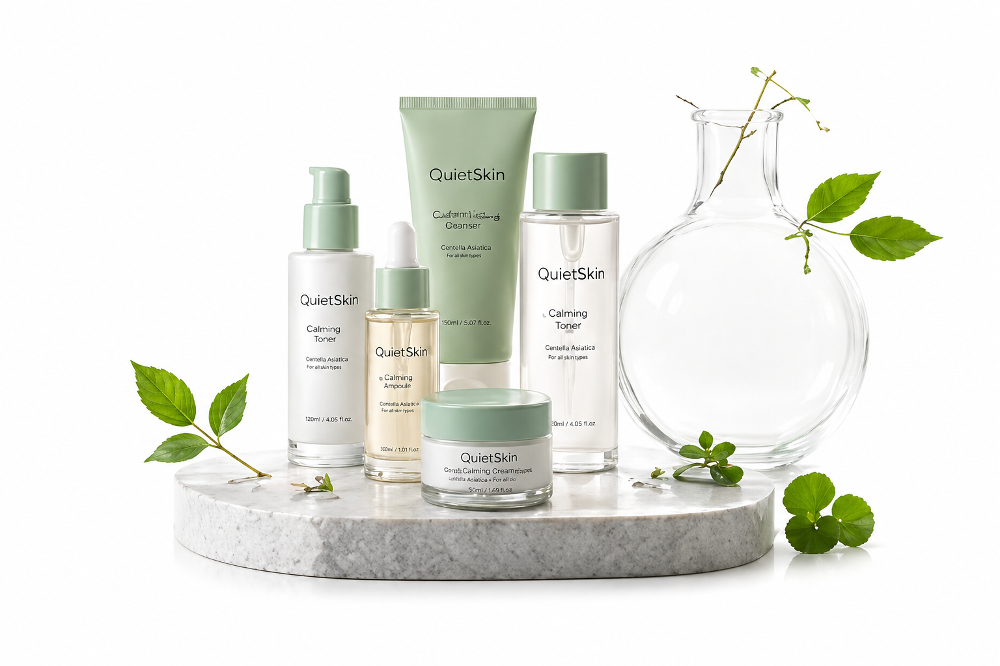

자극은 줄이고
진정은 섬세하게
병풀, 판테놀, 알란토인처럼 민감한 피부에 익숙한 성분을 중심으로 매일 사용해도 부담 없는 포뮬러를 설계합니다.

QuietSkin은 민감한 피부가 편안하게 회복할 수 있도록
불필요한 자극을 줄이고 매일 쓰기 좋은 스킨케어를 제안합니다.
계절 변화, 미세먼지, 마스크 착용, 잦은 실내외 온도 차는 피부를 쉽게 예민하게 만듭니다. QuietSkin은 이런 일상 속 자극을 연구하며 시작되었습니다. 단번에 강한 변화를 약속하기보다 피부가 편안함을 느끼는 사용감을 중요하게 생각합니다.
그래서 QuietSkin은 피부에 꼭 필요한 수분, 진정, 장벽 케어에 집중합니다. 향이나 컬러처럼 감각적인 요소보다 성분의 안정성과 사용 후 편안함을 먼저 확인합니다.

병풀, 판테놀, 알란토인처럼 민감한 피부에 익숙한 성분을 중심으로 매일 사용해도 부담 없는 포뮬러를 설계합니다.
피부 표면만 촉촉하게 남기는 것이 아니라 속당김을 줄이고 오래 편안한 보습감을 유지하는 사용감을 추구합니다.
화려한 표현보다 피부가 편안하게 받아들이는지를 우선합니다. 필요한 성분은 남기고 과한 자극 요소는 신중하게 덜어냅니다.
QuietSkin의 제품은 피부가 예민한 날에도 손이 가는 사용감을 목표로 개발됩니다.
각 성분이 진정, 보습, 장벽 중 어떤 역할을 하는지 먼저 검토합니다.
따가움, 끈적임, 답답함을 줄이기 위해 제형과 흡수 속도를 조정합니다.
토너, 앰플, 크림, 선케어 단계와 함께 사용했을 때 밀림이 없는지 확인합니다.
아침과 저녁 모두 부담 없이 사용할 수 있는 산뜻한 마무리감을 지향합니다.